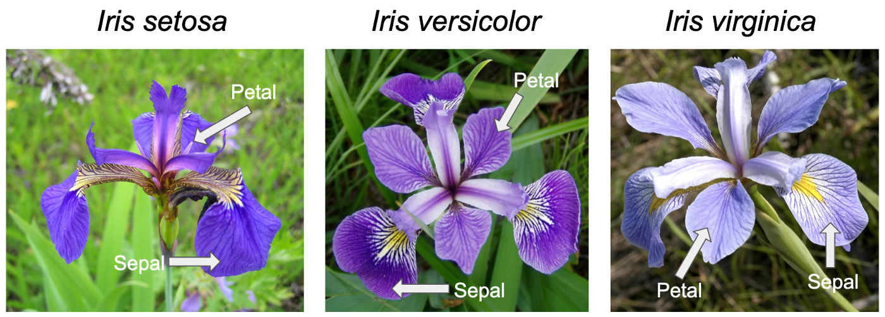

In this lab you will learn about:
- important considerations for data preparation before importing in R,
- working directories in R and how to efficiently with them using R projects,
- importing tabular data from
.txtand.csvfiles and how to resolve commonly encountered problems, - exploration of imported data with common issues and errors encountered.
Tabular data preparation and naming conventions in R
There is a set of R packages called tidyverse developed mostly by Hadley Wickham and described in his book R for data science (second edition). We will be using a lot of functions from tidyverse as they are very appropriate for R beginners. To use them to your maximum advantage, you need to get familiar with the concept of a tidy data frame:
- One column is one variable (i.e. gender, height, age),
- One row is one observation (for all measurements we did on one individual or any other given subject),
- One field is one value.

If you structure your dataframes in such a way, it will be efficiently organised and ready to be used when imported, processed and analysed by tidyverse and also base R functions. There are some other basic requirements/recommendations that your data should conform to in order to avoid problems while importing and using it:
- decimal separator in must be a dot!
- categorical variables should have consistent naming of the groups!
- column names should be without spaces! (connect with underscore
_) - column names must be without symbols! (i.e.:
?, $, *, +, (, ), -, /, }, {, |, >, < , #) - column names must not start with numbers!
- empty rows should be deleted!
- comments should be deleted!
- using č,š,ž,ć,đ is not recommended!
- format date in the long format! (Day, month, year as: 01/01/2016)
What can be imported in R? How and from where?
R supports a variety of file types to be imported, including:
- dataframes (saved as comma separated value files -
.csv, excel spreadsheets -.xlsx, text files -.txt, google spreadsheets, etc. ) - R format files (
.Rdata,.RDS) - geospatial data (shape files -
.shp, raster files -.ASCII,.imgor.tiff) - data from databases (i.e. MySQL)
- files from web or web databases through specialized packages (i.e.
rgbiforsdmpredictorspackages; GBIF = Global Biodiverstity Information Facility) - files from other specialized statistical software (i.e. SPSS, STATA, SAS)
For importing files from the hard drive (most often .txt, .csv and xlsx), there is a specific function that imports specific file type. For example, read.csv() is used to import comma separated values file, read.table() for text files and read_excel() for excel spreadsheets. All this functions have a common argument, we need to specify: file or path which is the location of the document you want to import on our hard-drives. There are two ways we can specify this locations:
- full file path, i.e.
C:\Users\Matic\OneDrive - UPR\01_FAMNIT\02_VAJE\2021_22\201_sodobni pristopi\2_Importing data and data transfomations\01_data\example_data.csv- not recommended. - file path without the working directory, i.e.
01_data\example_data.csv- better, but not optimal.
The working directory is a default location on the hard-drive, where R “looks” for files. As we usually don’t know which one it is, we use getwd() function with empty brackets to figure it out:
getwd()If we want to change the working directory, we use setwd() function, where we specify the location on our computers hard drive (mandatory in quotations). For example, if I want to set Desktop as working directory for my computer, I would use:
setwd("C:\Users\matic.jancic\Desktop“)Each time we restart RStudio, the working directory will change back to the default. This means that for our code to work and import the data, we would need to re-run setwd() command.
The preferable and recommended way to avoid potential problems with setting and resetting the working directory each time we come back to RStudio is to use R project workflow.
We need to create a folder on our hard-drive and assign it to an R project. An icon will appear in the folder and starting RStudio from this icon will automatically set the working directory to that particular folder. If we than keep our data, scripts and results in this folder as well, we will save ourselfs from issues associated with working directories. More info about R projects here.
Click on File tab in your RStudio, select New project and create new R project on your Desktop called My first R project by following the instructions bellow:


Go to the Desktop of your computer and check for the new folder. What is in it?

Create two new folders within
My first R projectcalled01_dataand02_scripts.Close R studio and reopen it by using the R project icon called
My first R projectfrom the new folder.Open an empty R script (if not already) and use
getwd()function to check your current working directory. To what is it set now?
Datasets
From e-classroom download the files penguins.txt and iris.csv. Copy and paste them into the 01_data folder.

The penguins.txt file includes measurements of bill lengths and depths, flipper lengths and body mass for three penguin species, collected and made available by Dr. Kristen Gorman and the Palmer Station, Antarctica LTER, a member of the Long Term Ecological Research Network.
Credit: Horst AM, Hill AP, Gorman KB (2020). palmerpenguins: Palmer Archipelago (Antarctica) penguin data. R package version 0.1.0. https://allisonhorst.github.io/palmerpenguins. doi: 10.5281/zenodo.3960218.
The iris.csv contains measurements in centimeters of the petal length and width and sepal length and width of three Iris species: Iris virginica, I. versicolor and I. setosa.

Importing .txt and .csv files in R
First we will import penguins.txt file by using read.table() function. As the working directory is set to our project folder, we need to specify the subfolder (01_data/) and the name of the file we want to import. We must also include the file extension, .txt.
Reminders from the previous lab:
- the path name is a character strings and must be contained within parenthesis
" ". - if we want to use data after applying some function to it, we need to assign it to objects (
<-), - we are the ones that choose the names of objects (
penguinsin this case)
Taking into account all of the above, the following code should import the penguins dataset and assign it to the penguins object:
penguins <- read.table(file = "01_data/penguins.txt") The resulting penguins object should have 344 observations of 8 variables.
Let’s continue with importing .csv file with read.csv() function. As the working directory is set to our project folder, we need to specify the subfolder (01_data/) and the name of the file we want to import. We must also include the file extension, .csv.
To import iris.csv and assign it to an object iris use the following code:
iris <- read.csv(file = "01_data/iris.csv") The resulting object should contain 150 observations of 5 variables.
It is recommended to always check the properties of the imported data, to verify that the import has the same properties as the file on the hard drive. Some of the functions were introduced last time, this time we will add str() and summary().
nrow(iris)[1] 150ncol(iris)[1] 5dim(iris)[1] 150 5class(iris)[1] "data.frame"str(iris)'data.frame': 150 obs. of 5 variables:
$ Sepal_Length: num 5.1 4.9 4.7 4.6 5 5.4 4.6 5 4.4 4.9 ...
$ Sepal_Width : num 3.5 3 3.2 3.1 3.6 3.9 3.4 3.4 2.9 3.1 ...
$ Petal_Length: num 1.4 1.4 1.3 1.5 1.4 1.7 1.4 1.5 1.4 1.5 ...
$ Petal_Width : num 0.2 0.2 0.2 0.2 0.2 0.4 0.3 0.2 0.2 0.1 ...
$ Species : chr "setosa" "setosa" "setosa" "setosa" ...summary(iris) Sepal_Length Sepal_Width Petal_Length Petal_Width
Min. :4.300 Min. :2.000 Min. :1.000 Min. :0.100
1st Qu.:5.100 1st Qu.:2.800 1st Qu.:1.600 1st Qu.:0.300
Median :5.800 Median :3.000 Median :4.350 Median :1.300
Mean :5.843 Mean :3.057 Mean :3.758 Mean :1.199
3rd Qu.:6.400 3rd Qu.:3.300 3rd Qu.:5.100 3rd Qu.:1.800
Max. :7.900 Max. :4.400 Max. :6.900 Max. :2.500
Species
Length:150
Class :character
Mode :character
Use all of the functions above on the penguins object.
Common issues/errors and how to resolve them
With the location of and path to the file
The most common error you will encounter with both functions, especially at the beginning, is the following:
Error in file(file, "rt"): cannot open the connectionRun the following code. Why does it not work?
iris <- read.table(file = "01_data/iris.txt")
iris <- read.csv(file = "iris.csv")
iris <- read.csv("01_data/iriis.csv")This error means that the path to the file is not specified correctly. In plain terms, R is looking for the file which
- is not in the folder you specified,
- does not have a name you specified, or
- is not in a format you specified.
Double check the working directory, the folder where the data is stored, the name of the file and its extension:
With the number of rows and/or columns differs between original file and the created object
Sometimes the first row of the file, which includes column names, is treated as data when imported. When this happens, the columns will be named as V1, V2, etc. until the last column while the actual column names will be in the first row of the data, as can be seen below:
V1 V2 V3 V4 V5
1 Sepal_Length Sepal_Width Petal_Length Petal_Width Species
2 5.1 3.5 1.4 0.2 setosa
3 4.9 3 1.4 0.2 setosa
4 4.7 3.2 1.3 0.2 setosa
5 4.6 3.1 1.5 0.2 setosa
6 5 3.6 1.4 0.2 setosaWithin the read.csv() or read.table() include additional argument header = TRUE. This will tell R that the first row includes column names:
read.csv(..., header = TRUE) or read.table(..., header = TRUE).
Sometimes the imported data will have only one column. When this happens the symbol that separates the values in rows was not the one R was expecting it to be, as can be seen below:
Sepal_Length.Sepal_Width.Petal_Length.Petal_Width.Species
1 5.1,3.5,1.4,0.2,setosa
2 4.9,3,1.4,0.2,setosa
3 4.7,3.2,1.3,0.2,setosa
4 4.6,3.1,1.5,0.2,setosa
5 5,3.6,1.4,0.2,setosa
6 5.4,3.9,1.7,0.4,setosaWe determine the symbol that separates the values from the output and set it within the read.csv() or read.table(). In this example, the separator is comma - ,, which we set with the argument sep = ",":
read.csv(..., sep = ",") or read.table(..., sep = ",").
Another very common separator you will encounter in the .csv files is a semicolon - ;, while in the .txt tab \t is commonly used by program encoding. Note that the separator is included within quotations!
Exercise
Read the instructions carefully. If you don’t understand something or something doesn’t work straight away, first think about the problem/error, consult the materials in front of, the neighbor on your left, then on your right. If after all that you still don’t know how to fix the problem or proceed, than ask me for help!
1.1) Open an empty excel file. By following the tidy data frame concepts and basic requirements the data should conform to, create a random dataset. You can be creative and type in the excel whatever pops on your mind, but at minimum make two columns with numbers and two columns with names/categories for 10 observations.
1.2) When done, go to File tab and choose Save as and select where you want the file to be saved. In the pop-up window, choose a name for your file than click on the dropdown menu next to the Save as type and choose CSV (Comma delimited).
1.3) Import this file into R and explore if it was imported correctly.
2.1) Find one dataset in either .csv or .txt format online. The dataset should at minimum contain 100 observations (rows), one column with measurements (for example: weight, height, population or number of individuals), and one or two columns that divide the data into groups (for example: year, species, country etc.).
2.2) Download it, import it into R and assign it to an object with meaningful name.
2.3) Check if it was imported correctly, i.e. that it contains the same number of rows and observations as the file on your hardrive. If not, check if you encountered one of the most common errors, that are listed above.
- Save the script with all you commands
Exercise until the end of the lab or homework, if not completed
For those strugling to find the .csv or .txt datasets online: link.